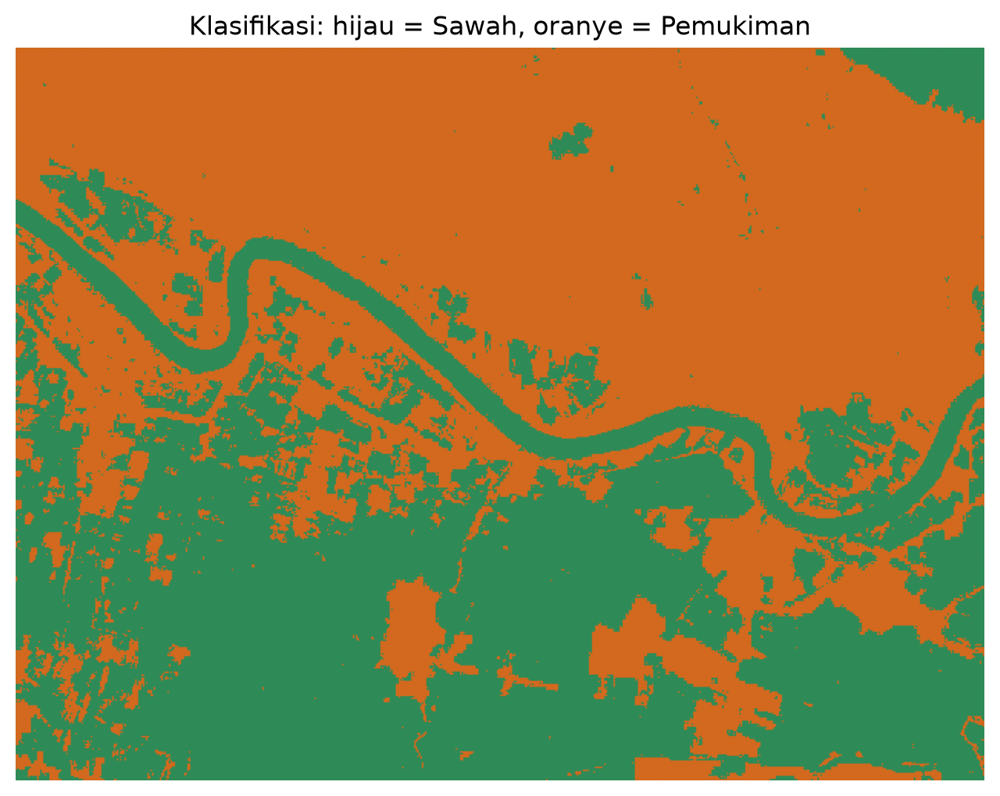

Pemetaan dan Klasifikasi Lahan Sawah dan Pemukiman Menggunakan Citra Sentinel-2A#
Bagian ini mendokumentasikan seluruh alur pemetaan lahan, mulai dari penentuan area dan sampel berbasis GeoJSON, akuisisi citra satelit Sentinel-2A (Level-2A) berformat GeoTIFF (.tif) melalui openEO (Copernicus Data Space Ecosystem), ekstraksi fitur spektral, pembagian dataset secara transparan pada level poligon sampel (70% Training / 30% Testing), klasifikasi Random Forest untuk membedakan Sawah dan Pemukiman, validasi akurasi, hingga visualisasi hasil dalam bentuk peta 2D dan 3D.
1. Gambaran Umum Alur Kerja#
Tahap |
Proses |
Keluaran |
|---|---|---|
1 |
Membaca GeoJSON & Pembagian Split Data |
|
2 |
Mengunduh citra Sentinel-2A via openEO |
|
3 |
Mengekstrak nilai spektral per poligon |
|
4 |
Melatih dan memvalidasi Random Forest |
Evaluasi Train & Test (Confusion matrix, Akurasi, Kappa) |
5 |
Memprediksi seluruh area |
|
6 |
Visualisasi 3D di atas relief (DEM) |
|
2. Data Masukan & Pembagian Dataset (Train vs Test per Poligon)#
Seluruh data spasial berasal dari berkas data/geojson/input2.geojson yang berisi 101 fitur bertipe Polygon. Atribut kelas disimpan pada kolom Type.
Nilai |
Jumlah |
Peran dalam Analisis |
|---|---|---|
Daerah |
1 |
Batas area studi (sekitar 24 km²). Dipakai sebagai spatial extent pengunduhan citra, bukan sampel. |
Sawah |
50 |
Sampel poligon kelas Sawah ( |
Pemukiman |
50 |
Sampel poligon kelas Pemukiman ( |
Pembagian Data Training & Testing yang Transparan#
Untuk mencegah kebocoran data (data leakage) akibat autokorelasi spasial antar piksel dalam poligon yang sama, pembagian dataset dilakukan secara terstratifikasi pada level poligon sampel (Group-based Split) sebesar 70% Training dan 30% Testing:
Data Training (70%): 35 Poligon Sawah & 35 Poligon Pemukiman (Total 70 Poligon / 8.618 Piksel)
Data Testing (30%): 15 Poligon Sawah & 15 Poligon Pemukiman (Total 30 Poligon / 3.419 Piksel)
Rincian Berkas Keluaran CSV (data/csv/split_dataset/)#
Guna memudahkan pengujian dan peninjauan oleh dosen/penguji, berkas CSV dipisahkan secara eksplisit berdasarkan tingkatan data (Level Poligon vs Level Piksel):
Berkas Tingkat Poligon (Area Sampel):
data/csv/split_dataset/data_training_poligon.csv: Daftar 70 ID Poligon (Sawah_01..35&Pemukiman_01..35) yang dijadikan lokasi latihan.data/csv/split_dataset/data_testing_poligon.csv: Daftar 30 ID Poligon (Sawah_36..50&Pemukiman_36..50) yang dijadikan lokasi pengujian independen.
Berkas Tingkat Piksel (Titik Data Fitur Spektral):
data/csv/split_dataset/fitur_piksel_training.csv: Memuat 8.618 baris data piksel dari 70 poligon latih (lengkap dengan nilai reflektansi B02, B03, B04, B08, B11, NDVI, NDWI, NDBI). Data ini yang dimasukkan ke algoritma Random Forest untuk proses pembelajaran.data/csv/split_dataset/fitur_piksel_testing.csv: Memuat 3.419 baris data piksel dari 30 poligon uji. Data ini TIDAK pernah dilihat model saat latihan, dan digunakan murni untuk mengukur akurasi pengujian (99,65%).
import openeo, json, os
import geopandas as gpd
import numpy as np
import pandas as pd
from sklearn.model_selection import train_test_split
gdf = gpd.read_file("../data/geojson/input2.geojson")
samples = gdf[gdf["Type"].isin(["Sawah", "Pemukiman"])].copy().reset_index(drop=True)
# Berikan ID Poligon Unik
sawah_cnt, pemukiman_cnt = 1, 1
id_poligon = []
for t in samples["Type"]:
if t == "Sawah":
id_poligon.append(f"Sawah_{sawah_cnt:02d}")
sawah_cnt += 1
else:
id_poligon.append(f"Pemukiman_{pemukiman_cnt:02d}")
pemukiman_cnt += 1
samples["ID_Poligon"] = id_poligon
# Pembagian Stratified Train-Test per Poligon
train_ids, test_ids = train_test_split(
samples["ID_Poligon"],
test_size=0.30,
stratify=samples["Type"],
random_state=42
)
samples["Status_Split"] = np.where(samples["ID_Poligon"].isin(train_ids), "Training", "Testing")
split_dir = "../data/csv/split_dataset"
os.makedirs(split_dir, exist_ok=True)
samples[["ID_Poligon", "Type", "Status_Split"]].to_csv("../data/csv/pembagian_dataset_train_test.csv", index=False)
samples[samples["Status_Split"] == "Training"][["ID_Poligon", "Type"]].to_csv(os.path.join(split_dir, "data_training_poligon.csv"), index=False)
samples[samples["Status_Split"] == "Testing"][["ID_Poligon", "Type"]].to_csv(os.path.join(split_dir, "data_testing_poligon.csv"), index=False)
3. Akuisisi Citra Sentinel-2A (.tif) melalui openEO#
Citra diambil dari koleksi SENTINEL2_L2A (Bottom-of-Atmosphere Reflectance) pada platform Copernicus Data Space Ecosystem melalui openEO. Pemrosesan dilakukan di server, sehingga yang diunduh hanya hasil clip area studi, bukan seluruh tile.
Parameter akuisisi
Parameter |
Nilai |
Keterangan |
|---|---|---|
Koleksi |
|
Reflektansi permukaan terkoreksi atmosfer |
Area |
Poligon |
Berasal dari GeoJSON |
Rentang waktu |
|
Satu tahun penuh untuk menekan tutupan awan |
Filter awan |
|
Seleksi tingkat scene |
Band |
B02, B03, B04, B08, B11, SCL |
SCL hanya untuk masking awan |
Agregasi temporal |
Median |
Menghasilkan satu komposit bebas awan |
Format keluaran |
GeoTIFF |
|
Masking awan. Selain filter tingkat scene, dilakukan masking tingkat piksel menggunakan band SCL (Scene Classification Layer). Piksel dengan kelas 3 (bayangan awan), 8 dan 9 (awan probabilitas sedang dan tinggi), 10 (cirrus), dan 11 (salju/es) dikeluarkan sebelum median dihitung.
conn = openeo.connect("openeo.dataspace.copernicus.eu").authenticate_oidc()
bands = ["B02", "B03", "B04", "B08", "B11", "SCL"]
cube = conn.load_collection(
"SENTINEL2_L2A",
spatial_extent=geom,
temporal_extent=["2025-08-24", "2026-08-23"],
bands=bands,
max_cloud_cover=30,
)
# Mask awan, bayangan awan, dan salju berdasarkan SCL
scl = cube.band("SCL")
mask = (scl == 3) | (scl == 8) | (scl == 9) | (scl == 10) | (scl == 11)
cube = cube.mask(mask.resample_cube_spatial(cube)).filter_bands(bands[:-1])
# Komposit median sepanjang dimensi waktu
cube = cube.reduce_dimension(dimension="t", reducer="median")
os.makedirs("../data/tif", exist_ok=True)
cube.download("../data/tif/sentinel2_area_studi.tif", format="GTiff")
4. Fitur Spektral dan Indeks Turunan#
Model menggunakan 8 fitur per piksel: 5 band reflektansi dan 3 indeks spektral. Nilai digital citra dibagi 10.000 untuk mengubahnya menjadi reflektansi.
Fitur |
Panjang Gelombang |
Kegunaan |
|---|---|---|
|
490 nm |
Pembeda objek terang, bangunan, dan air |
|
560 nm |
Pantulan hijau vegetasi, komponen NDWI |
|
665 nm |
Penyerapan klorofil, komponen NDVI |
|
842 nm |
Pantulan kuat oleh vegetasi sehat |
|
1610 nm |
Sensitif terhadap kelembapan tanah dan material bangunan |
Indeks yang dihitung
Normalized Difference Vegetation Index (kerapatan dan kesehatan vegetasi):
\[\text{NDVI} = \frac{\text{B08} - \text{B04}}{\text{B08} + \text{B04}}\]Normalized Difference Water Index (kandungan air, relevan untuk fase genangan sawah):
\[\text{NDWI} = \frac{\text{B03} - \text{B08}}{\text{B03} + \text{B08}}\]Normalized Difference Built-up Index (area terbangun):
\[\text{NDBI} = \frac{\text{B11} - \text{B08}}{\text{B11} + \text{B08}}\]
5. Ekstraksi Nilai Spektral per Poligon#
Untuk setiap poligon sampel, piksel yang berada di dalam poligon diambil menggunakan rasterio.mask. Parameter all_touched=True memastikan poligon kecil tetap menyumbang minimal satu piksel. Piksel yang tertutup awan atau tidak memiliki data (NaN atau bernilai 0) dibuang. Setiap poligon dicatat status pembagian datanya (Training / Testing).
import os, rasterio, numpy as np, pandas as pd
from rasterio.mask import mask as rio_mask
if os.path.exists("../data/tif/sentinel2_area_studi.tif"):
with rasterio.open("../data/tif/sentinel2_area_studi.tif") as src:
smp = samples.to_crs(src.crs)
rows = []
for idx, r in smp.iterrows():
try:
m, _ = rio_mask(src, [r.geometry], crop=True, all_touched=True, filled=False)
except ValueError:
continue
arr = m.astype("float32").filled(np.nan) / 10000
# ... hitung NDVI, NDWI, NDBI lalu simpan rata-rata & status split per poligon
Ringkasan rata-rata indeks per kelas dan status pembagian data (Split Status):
Kelas |
Status Split |
Jumlah Piksel Rata-rata |
NDVI |
NDWI |
NDBI |
|---|---|---|---|---|---|
Pemukiman |
Testing |
205.93 |
0.2798 |
-0.3156 |
0.0866 |
Pemukiman |
Training |
203.11 |
0.2941 |
-0.3340 |
0.0766 |
Sawah |
Testing |
22.00 |
0.3682 |
-0.2767 |
-0.2342 |
Sawah |
Training |
43.11 |
0.3287 |
-0.2174 |
-0.2761 |
Interpretasi. Indeks yang paling jelas membedakan kedua kelas adalah NDBI: pemukiman bernilai positif (0,076 s.d. 0,086) sedangkan sawah bernilai negatif (-0,234 s.d. -0,276). NDWI sawah juga lebih tinggi daripada pemukiman (-0,217 dibanding -0,334), sesuai dengan sifat sawah yang lembap dan sering tergenang.
6. Klasifikasi Random Forest#
6.1 Dataset Pelatihan dan Pengujian (Per Piksel)#
Pemodelan memakai data per piksel yang mewarisi status pembagian poligon asal-nya (Training atau Testing). Total ekstraksi piksel dari 100 poligon sampel menghasilkan 12.037 piksel:
Piksel Training (70% Poligon / 70 Poligon): 8.618 piksel
Piksel Testing (30% Poligon / 30 Poligon): 3.419 piksel
6.2 Pelatihan & Evaluasi Model#
Model Random Forest Classifier dilatih hanya menggunakan piksel dari poligon Training Set, kemudian dievaluasi secara ketat pada piksel dari poligon Testing Set.
from sklearn.ensemble import RandomForestClassifier
from sklearn.metrics import (confusion_matrix, accuracy_score,
cohen_kappa_score, classification_report)
# Melatih Model pada Data Training
rf = RandomForestClassifier(n_estimators=300, class_weight="balanced",
random_state=42, n_jobs=-1)
rf.fit(X_train, y_train)
# Prediksi Data Training & Testing
pred_train = rf.predict(X_train)
pred_test = rf.predict(X_test)
print("Akurasi Data Training:", accuracy_score(y_train, pred_train))
print("Akurasi Data Testing :", accuracy_score(y_test, pred_test))
print("Cohen's Kappa (Test) :", cohen_kappa_score(y_test, pred_test))
print(classification_report(y_test, pred_test))
7. Hasil Validasi dan Evaluasi Model#
Validasi dilakukan secara independen pada data uji (30% poligon uji = 3.419 piksel).
Confusion Matrix (Data Testing) (baris = aktual, kolom = prediksi):
Prediksi Sawah |
Prediksi Pemukiman |
|
|---|---|---|
Aktual Sawah |
321 |
9 |
Aktual Pemukiman |
3 |
3.086 |
Metrik Akurasi
Metrik |
Nilai |
Penjelasan |
|---|---|---|
Training Accuracy |
99,90% |
Performa model pada data pelatihan |
Testing Accuracy |
99,65% |
3.407 dari 3.419 piksel uji berhasil diklasifikasi dengan benar |
Cohen’s Kappa |
0,9797 |
Menunjukkan tingkat kesepakatan yang sangat tinggi |
Precision Sawah |
0.99 |
99% piksel yang diprediksi Sawah adalah benar-benar Sawah |
Recall Sawah |
0.97 |
97% piksel Sawah berhasil terdeteksi |
F1-Score Sawah |
0.98 |
Keseimbangan sensitivitas dan presisi untuk kelas Sawah |
Precision Pemukiman |
1.00 |
Presisi sempurna untuk kelas Pemukiman |
Recall Pemukiman |
1.00 |
Seluruh piksel Pemukiman terdeteksi dengan sangat akurat |
Urutan Kepentingan Fitur (Feature Importance):
B11(SWIR): 0.347 (Fitur paling dominan membedakan kelembapan & bahan bangunan)NDBI(Built-up Index): 0.201B04(Red): 0.134B08(NIR): 0.108NDWI(Water Index): 0.076B02(Blue): 0.067NDVI(Vegetation Index): 0.038B03(Green): 0.029
8. Visualisasi Peta 2D Klasifikasi Tutupan Lahan#
Peta 2D hasil pemetaan tutupan lahan membedakan area Sawah dan Pemukiman di area studi berdasarkan reflektansi spektral Sentinel-2A dan model Random Forest:

9. Visualisasi Peta 3D Interaktif#
Peta hasil klasifikasi tutupan lahan dipetakan ke atas relief Copernicus DEM (30 m) untuk menghasilkan peta permukaan 3D interaktif yang dapat diputar, di-zoom, dan digeser langsung di browser.
10. Notebook Interaktif & Berkas Keluaran#
Seluruh eksperimen dan eksekusi kode dapat diakses melalui berkas notebook berikut:
Berkas Keluaran Proyek
Berkas |
Isi |
|---|---|
|
Rekapitulasi 100 poligon sampel & status split (70:30) |
|
Daftar 70 poligon sampel Data Training |
|
Daftar 30 poligon sampel Data Testing |
|
Data fitur spektral 8.618 piksel Data Training |
|
Data fitur spektral 3.419 piksel Data Testing |
|
Nilai fitur spektral rata-rata per poligon sampel |
|
Citra Sentinel-2A komposit (B02, B03, B04, B08, B11) |
|
Peta klasifikasi (0 = nodata, 1 = Sawah, 2 = Pemukiman) |
|
Model elevasi digital area studi |
|
Peta 2D klasifikasi tutupan lahan |
|
Peta 3D interaktif |